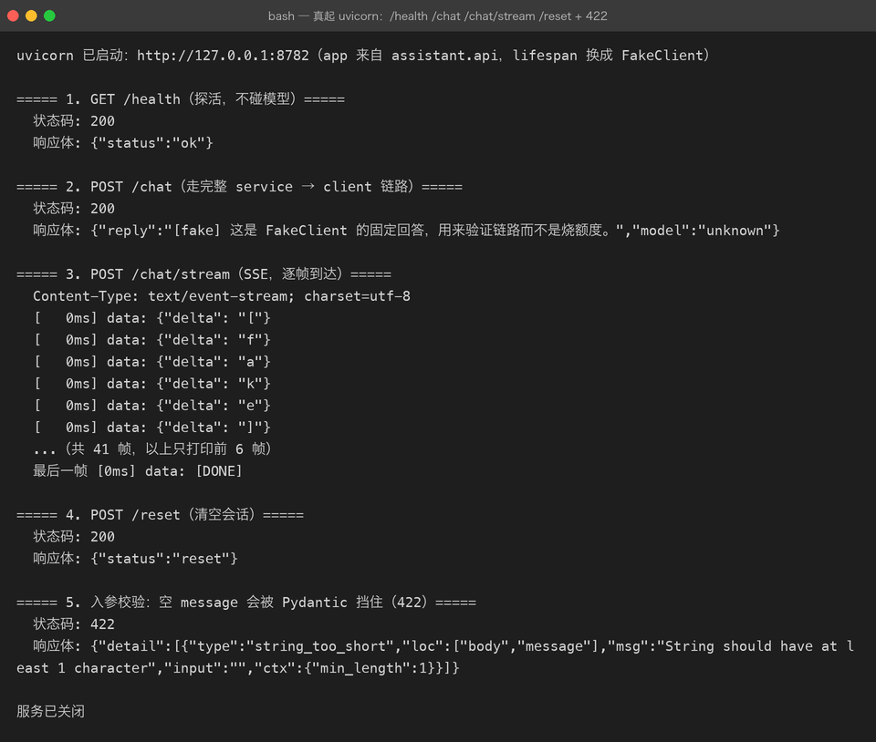

Project 02 — Chapter 09：FastAPI【Web 服务】
状态：✅ 已校对 对应代码：
src/assistant/api.py前置：Chapter 01（async）、Chapter 08（packaging）
1. 项目要增加什么能力
现在的助手只能自己在命令行里用：
ai-assistant "问题"但真实场景需要的是给别人用：
场景 1：前端页面要调它
场景 2：另一个服务要集成它
场景 3：想做成流式输出（像 ChatGPT 那样一个字一个字蹦）本章目标：
在已有的 service 层之上加一层 HTTP 接口，提供
/chat（一次性返回）和/chat/stream（SSE 流式）两个端点。
关键约束：
不重写业务逻辑。 CLI 和 API 复用同一个
AssistantService。
2. 为什么需要这个知识
FastAPI 在 Python 生态里的位置，约等于 Spring Boot 在 Java 生态里的位置：
Spring Boot = Spring MVC + 自动配置 + 内嵌 Tomcat
FastAPI = Starlette(ASGI) + Pydantic 校验 + 自动生成 OpenAPI 文档选它的三个理由（对 AI 应用尤其重要）：
1. 原生 async —— LLM 调用是 I/O 密集，async 才能扛并发
2. 自动生成接口文档 —— /docs 直接能调试，省掉写接口文档的时间
3. 类型驱动 —— 用 Python 类型注解声明请求/响应，自动校验 + 自动补全第三点对 AI 应用特别友好：请求体、响应体、SSE 事件格式都能用类型约束住。
3. 核心概念
3.1 最小应用
# src/assistant/api.py
from fastapi import FastAPI
from pydantic import BaseModel, Field
app = FastAPI(title="Engineering AI Assistant", version="0.1.0")
class ChatRequest(BaseModel):
message: str = Field(..., min_length=1, max_length=4000)
session_id: str | None = None
class ChatResponse(BaseModel):
reply: str
model: str
@app.post("/chat", response_model=ChatResponse)
async def chat(req: ChatRequest) -> ChatResponse:
return ChatResponse(reply="...", model="deepseek-chat")启动：
uvicorn assistant.api:app --reload --port 8000然后打开 http://127.0.0.1:8000/docs —— Swagger 文档已经自动生成好了。
3.2 Pydantic 模型 = Spring 的 DTO
class ChatRequest(BaseModel):
message: str = Field(..., min_length=1, max_length=4000)
temperature: float = Field(0.7, ge=0, le=2)对应 Java：
public class ChatRequest {
@NotBlank @Size(max = 4000) private String message;
@DecimalMin("0") @DecimalMax("2") private Double temperature = 0.7;
}差异：FastAPI 的校验规则直接写在类型里，且运行时强制生效（不合法请求直接 422，附带详细错误位置）。
3.3 依赖注入：Depends
Spring 里这么写：
@RestController
public class ChatController {
private final AssistantService service;
public ChatController(AssistantService service) { this.service = service; }
}FastAPI 这么写：
def get_service() -> AssistantService:
return app.state.service # 从应用状态里取
@app.post("/chat")
async def chat(req: ChatRequest, service: AssistantService = Depends(get_service)):
...Depends 做的事：
1. 调用 get_service() 拿到对象
2. 作为参数传进路由函数
3. 测试时可以 override 掉（这才是重点）测试时替换依赖：
from fastapi.testclient import TestClient
def test_chat():
app.dependency_overrides[get_service] = lambda: make_fake_service()
client = TestClient(app)
resp = client.post("/chat", json={"message": "你好"})
assert resp.status_code == 200这就是 Chapter 07 说的「不联网测试」在 Web 层的落地。
3.4 生命周期：lifespan
问题：HTTP client 应该什么时候创建、什么时候关闭？
# ❌ 每次请求都新建 client —— 连接池白瞎了，还有资源泄漏
@app.post("/chat")
async def chat(req: ChatRequest):
client = DeepSeekClient(settings)
...正确做法：用 lifespan 在应用启动时建一次，关闭时销毁。
from contextlib import asynccontextmanager
@asynccontextmanager
async def lifespan(app: FastAPI):
settings = Settings.from_env() # 启动：读配置
setup_logging(settings.log_level)
client = DeepSeekClient(settings) # 启动：建 client（含连接池）
app.state.service = AssistantService(client)
logger.info("服务启动完成")
yield # ← 服务运行中
await client.aclose() # 关闭：释放连接
logger.info("服务已关闭")
app = FastAPI(lifespan=lifespan)对应 Spring：@PostConstruct / @PreDestroy，或者实现 DisposableBean。
3.5 SSE 流式输出
ChatGPT 那种一个字一个字蹦的效果，用的是 SSE（Server-Sent Events）。
服务端：
from fastapi.responses import StreamingResponse
@app.post("/chat/stream")
async def chat_stream(req: ChatRequest, service=Depends(get_service)):
async def event_gen():
async for chunk in service.stream(req.message): # service 提供异步生成器
yield f"data: {json.dumps({'delta': chunk}, ensure_ascii=False)}\n\n"
yield "data: [DONE]\n\n"
return StreamingResponse(event_gen(), media_type="text/event-stream")客户端（curl 就能看效果）：
curl -N -X POST http://127.0.0.1:8000/chat/stream \
-H "Content-Type: application/json" \
-d '{"message":"讲个笑话"}'前端用 EventSource 或 fetch + ReadableStream 接收。
注意两点：
1. 每条消息必须以两个换行结尾（\n\n）—— SSE 协议要求
2. StreamingResponse 的 media_type 必须是 text/event-stream3.6 async def vs def
@app.post("/a")
async def a(): ... # 在事件循环里跑，可以 await
@app.post("/b")
def b(): ... # 丢到线程池跑，不阻塞事件循环规则：
路由函数里如果要
await，就必须async def。 反过来说，如果写了async def却在里面做同步阻塞操作（比如time.sleep、requests.get），会卡死整个事件循环。
这是最致命的坑：
@app.post("/chat")
async def chat(req: ChatRequest):
time.sleep(5) # ❌ 整个服务 5 秒内无法响应任何请求
requests.get(...) # ❌ 同步 HTTP，同样卡死
await client.chat() # ✅ 异步 HTTP，OK4. 项目代码
src/assistant/
├── service.py # AssistantService：业务逻辑（CLI 和 API 共用）
├── cli.py # 命令行入口
└── api.py # FastAPI 应用（本章新增）两个端点：
| 端点 | 方法 | 说明 |
|---|---|---|
POST /chat | 一次性返回 | {"message": "...", "session_id": "可选"} → {"reply": "...", "model": "..."} |
POST /chat/stream | SSE 流式 | 逐个 token 推送 |
GET /health | 健康检查 | 给 Docker / K8s 探活用 |
GET /docs | 自动文档 | FastAPI 自带 |
启动：
uvicorn assistant.api:app --host 127.0.0.1 --port 8000 --reload关键设计：api.py 里没有任何业务逻辑，它只做三件事：
1. 校验入参（Pydantic）
2. 调 service
3. 包装响应这样 CLI 和 API 永远不会逻辑不一致——它们本来就是同一份代码。
5. Java ↔ Python 对比
| Spring Boot | FastAPI | 说明 |
|---|---|---|
@RestController | APIRouter() / 装饰器 | 同 |
@PostMapping("/x") | @app.post("/x") | 同 |
@RequestBody DTO | Pydantic BaseModel | FastAPI 自动校验 |
@Valid | 类型注解 + Field() | 声明式校验 |
@Autowired | Depends(...) | 依赖注入 |
@PostConstruct | lifespan 里 yield 之前 | 启动初始化 |
@PreDestroy | lifespan 里 yield 之后 | 关闭清理 |
@ExceptionHandler | @app.exception_handler(...) | 同 |
| Filter / Interceptor | Middleware | 同 |
ResponseEntity | 直接返回 dict / Pydantic 对象 | FastAPI 自动序列化 |
springdoc-openapi | 内置 /docs | FastAPI 零配置 |
| Tomcat（线程池） | uvicorn（事件循环） | 架构不同：线程 vs 协程 |
最需要转过来的思维：
Spring 用「线程池」扛并发（一个请求一个线程），FastAPI 用「事件循环」。 所以 Spring 里
Thread.sleep只卡当前请求，FastAPI 里time.sleep卡所有人。
6. 常见坑
坑 1：async 路由里做同步阻塞
见 3.6。症状：服务在压测时 QPS 掉到个位数，CPU 却很闲。
排查：所有 async def 里搜 requests. / time.sleep / 同步文件 IO。
坑 2：每次请求新建 HTTP client
async def chat(req):
async with httpx.AsyncClient() as c: # ❌ 每次新建，连接池失效
...后果：TCP 握手 + TLS 握手的开销每次都付一遍，延迟翻倍。
解决：client 在 lifespan 里建一次，全局复用（见 3.4）。
坑 3：忘了 await
@app.post("/chat")
async def chat(req):
reply = service.ask(req.message) # ❌ 没 await
return {"reply": reply} # 返回的是 coroutine 对象，序列化报错坑 4：SSE 被中间件缓冲
Nginx 反向代理默认会缓冲响应，导致 SSE 变成「一次性返回」。需要：
proxy_buffering off;
proxy_cache off;坑 5：422 看不懂
请求体不合法时 FastAPI 返回 422，响应体里会有详细的错误位置：
{"detail":[{"type":"string_too_short","loc":["body","message"],"msg":"String should have at least 1 character"}]}loc 告诉你哪个字段错了 —— 这是 Pydantic 的功劳，善用 /docs 调试。
坑 6：CORS
前端（localhost:5173）调后端（localhost:8000）会被浏览器拦。加中间件：
from fastapi.middleware.cors import CORSMiddleware
app.add_middleware(
CORSMiddleware,
allow_origins=["http://127.0.0.1:5173"], # 别写 "*" 上生产
allow_methods=["*"],
allow_headers=["*"],
)7. 实战挑战
挑战 1：实现 POST /chat 和 GET /health，用 /docs 页面手工调通。
挑战 2：实现 SSE 流式端点，用 curl -N 验证内容是一段段出来的，而不是一次返回。
挑战 3（进阶）：用 TestClient 写集成测试，通过 dependency_overrides 注入 Fake service，不联网验证 /chat 返回 200 且字段正确。
8. 主动回忆
- FastAPI 为什么要
async def？写了async def却做同步操作会怎样？ Depends对应 Spring 的什么？测试时怎么替换依赖？lifespan解决了什么问题？yield 前后分别做什么？- Pydantic 模型和 Java DTO 的异同？
- SSE 响应体的两个硬性要求是什么？
- 为什么 Spring 的设计（线程池）让你更容易写出「能跑但慢」的 FastAPI 代码？
9. 本节完成标准
- [ ]
api.py里没有业务逻辑，只做校验 + 调 service + 包装响应 - [ ] 实现
POST /chat、POST /chat/stream（SSE）、GET /health - [ ] HTTP client 在
lifespan中创建并复用，退出时aclose() - [ ] 所有
async def路由内没有同步阻塞调用 - [ ] 用
TestClient+dependency_overrides写了不联网的集成测试 - [ ]
uvicorn能启动，/docs可访问
Project 02 完成。 此时的能力闭环：
异步 I/O + 类型安全 + 配置管理 + 日志 + 测试 + 打包 + Web API
= 一个可以被别人安装、调用、部署的 AI 服务回到总纲：../OVERVIEW.md
实跑验证（2026-09-26）：uvicorn 启动后，三个端点全部真实调通——
/health探活、/chat一次性返回、/chat/streamSSE 逐段推送：

